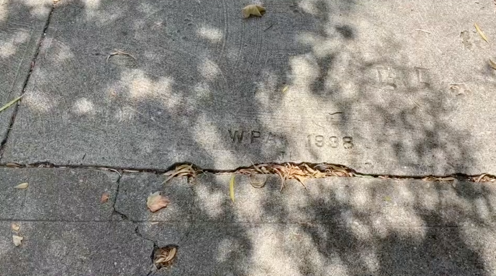
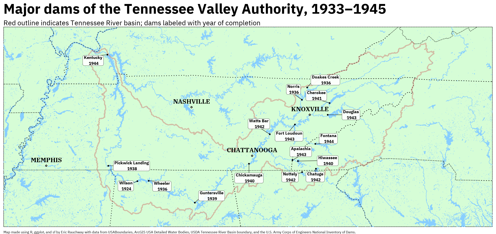
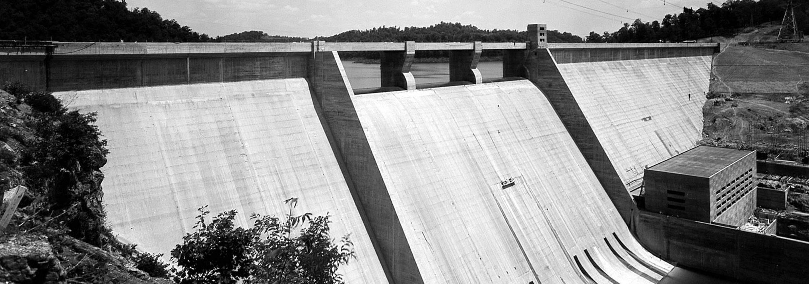

Climate, architecture, and the public in the New Deal
The New Deal dramatically changed the built environment in the United States
A constructed commons both grand . . .
. . . and mundane
Works for the whole public

Design for democracy
Watershed architecture

The architecture of democratic power
The architecture of democratic power

Design for sustainability
Design for democracy and sustainability